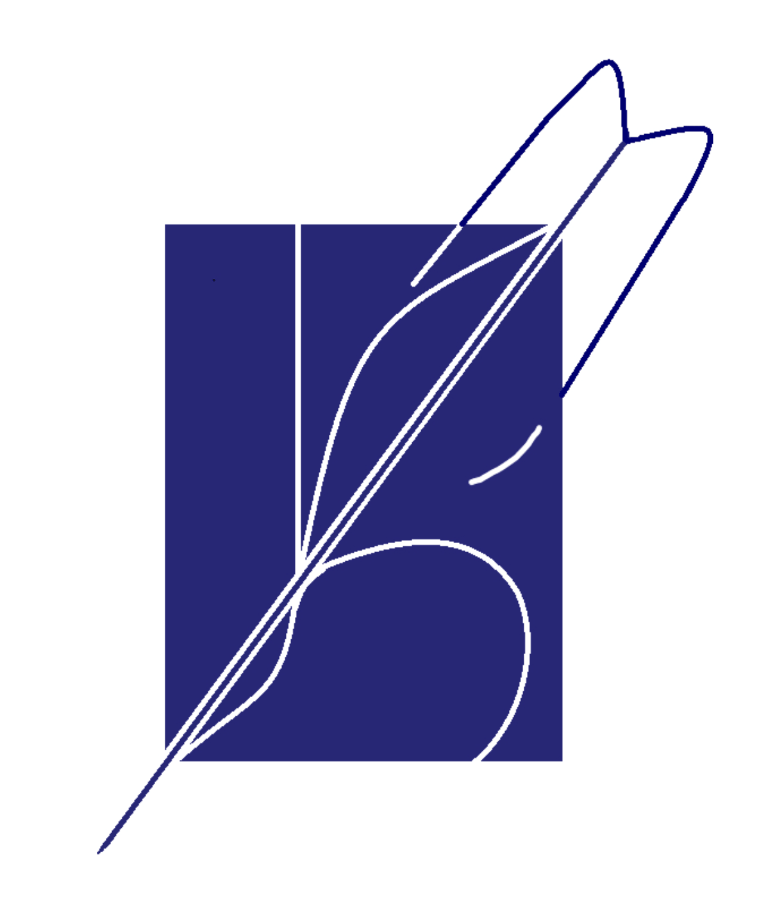

团队专注于校园趣事的无纸化展示、校墙和校园社区建设，为用户提供独特的阅读与留言体验。
The team focuses on the paperless display and interactive comments of campus anecdotes.
MORE————



团队专注于校园趣事的无纸化展示、校墙和校园社区建设，为用户提供独特的阅读与留言体验。
The team focuses on the paperless display and interactive comments of campus anecdotes.
MORE